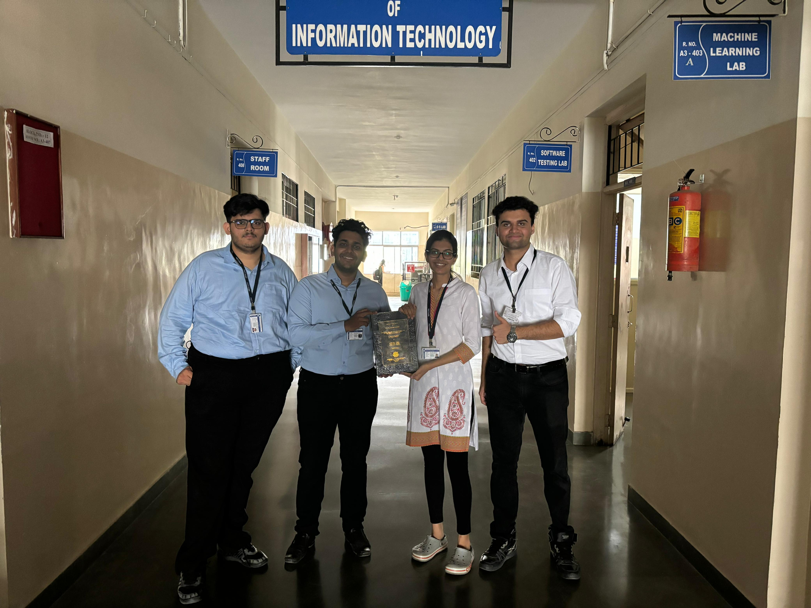
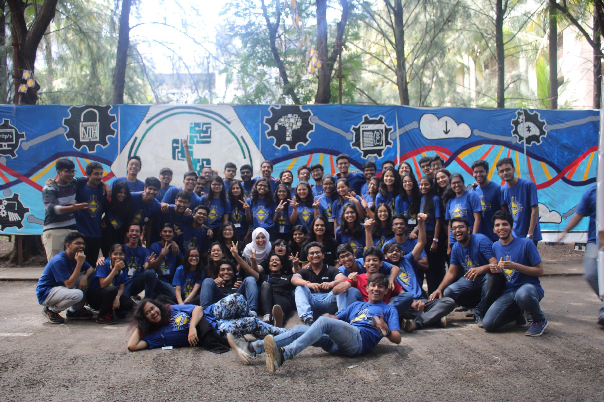
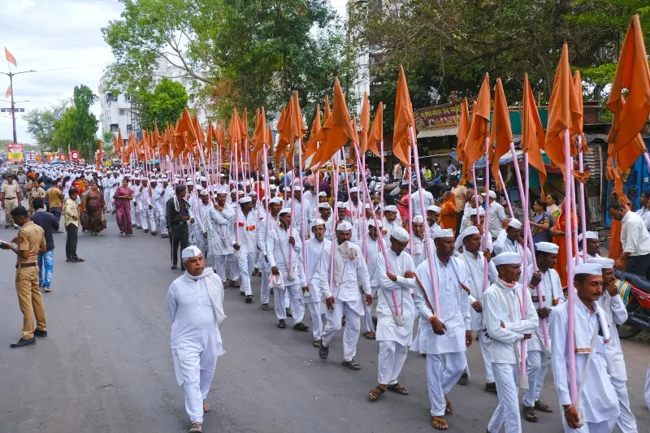

Extra-curriculars
I strongly believe that the person you become outside the classroom is just as important as the engineer you train to be inside it. Extracurricular involvement has never been an afterthought for me, it has been a deliberate, consistent part of how I grow.
From leading technical initiatives within one of India's most decorated IEEE student branches to a decade of quiet, unglamorous service at one of Maharashtra's most beloved pilgrimages, these experiences have shaped my character in ways that no coursework could. They've taught me accountability, community, and what it means to commit to something beyond personal gain.
Whether it was organising technical festivals, writing for a student magazine, or waking up before dawn to distribute food and water to thousands of pilgrims on foot, I showed up. That, to me, is what extracurricular really means.

PICT IEEE Student Branch (PISB)
During my undergraduate years at PICT, I was an active member of the PICT IEEE Student Branch, one of the most decorated student chapters in the IEEE Pune Section. Founded in 1988, PISB has consistently been recognised for its impact on student development, winning the IEEE India Council Outstanding Student Branch Award in 2023, 2024, and 2025.
I was specifically involved with the AI & Robotics Special Interest Group (SIG), where I explored applied machine learning, computer vision, and robotics alongside a driven community of peers. This environment played a significant role in shaping my interest in intelligent systems and directly influenced my decision to pursue graduate research in robotics.

Social Service — Palkhi Yatra
For over a decade, I have volunteered as part of a food donation initiative supporting the annual Palkhi Yatra in Maharashtra, one of the largest and most revered pilgrimage traditions in India, where hundreds of thousands of Warkaris walk to Pandharpur in devotion.
My contribution involved attending to the needs of Yatris (travellers) along the route, organising and distributing food, ensuring access to safe drinking water, and providing general support to pilgrims making the demanding journey on foot. This was not a one-off act of service but a sustained, ten-year commitment rooted in a genuine sense of responsibility toward the community.
In recognition of these efforts, I was awarded a Certificate of Social Service by the Lions Club Phaltan Platinum in 2021. More than the recognition, this experience grounded me, it taught me the value of showing up for something larger than yourself, consistently and without expectation.
